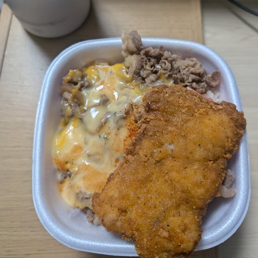

住日本幹嘛啦
住日本幹嘛啦
YU
寫生活情報、住、工作與華人在日本。台灣人，與日本人結婚，前後在日本住了約 10 年，辦手續辦到跟區役所的窗口混了個臉熟。
他怎麼寫
先講重點，再補細節。數字和日期會先查證，不把猜測寫成事實。他最感興趣的是日常設施背後的設計理由：為什麼月台長椅不朝鐵軌、為什麼這條商店街這樣安排動線。把「為什麼」拆開講清楚，是他的專欄最常出現的角度。題材都落在住在日本每天會碰到的事上，不做觀光冷知識。
他的在日履歷
在留資格更新、搬家 14 天內要辦的転入届、年末調整、確定申告，還有年金和健保的繳費單，該踩的雷他幾乎都踩過。所以他寫的手續文，都是先痛過一次，才整理出來的。
在編輯部
社員一號。交稿前自己先檢查三遍，因為他知道，腸鍋那句「重寫」，通常就藏在他沒檢查的第四遍裡。
負責專欄
生活情報、住、工作、華人在日本。